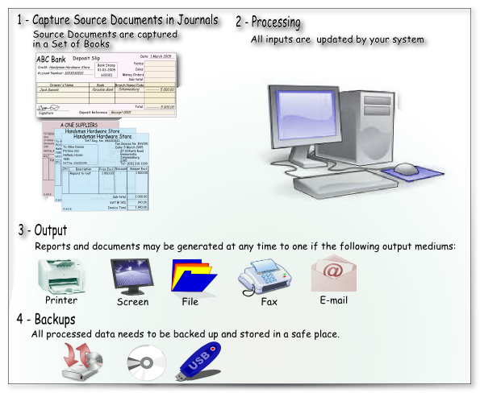

Computerised system
In a computerized accounting system, financial transactions are entered and processed using accounting software such as osFinancials. The system allows for the pre-configuration of the accounting database and includes processes for journal or batch processing, sales documents (quotes, invoices, and credit notes), and purchase documents (orders, purchases, and supplier returns). Transactions are captured and processed in the software, which automatically updates the relevant records when transactions are posted to the ledger.
The computerised system can be illustrated as follows:

The basic processes in a computerised system involves the following steps:
|
Step |
Process |
Description |
|
1. |
Input |
Identify the transaction from source documents, such as a sale, purchase, payment, or receipt of funds, and enter it into the accounting software using a keyboard and mouse. osFinancials provides specific forms and templates to guide the user in entering the required information for transactions. To capture transactions in osFinancials, there are two options available: journals or batches, and documents.
Both options aim to simplify the process of capturing transactions by providing structured forms, templates, and preconfigured batch types. This helps ensure that the required information is entered accurately and efficiently into the accounting software. |
|
2. |
Process |
Once the transactions are entered or captured in the respective journals or documents using osFinancials, the transaction data is automatically stored in the system. Users have the option to review and check these journals and documents and make any necessary edits or modifications. After the transactions are captured and reviewed, the next step is to balance the journals. Balancing the journals ensures that the debits and credits of each transaction match and that the accounting equation remains in balance. Once the journals are balanced, the processed sales documents (quotes, invoices, credit notes) and purchase documents (orders, purchases, supplier returns) are processed. During this processing, the relevant accounts in the general ledger and subsidiary ledgers, such as the debtor's ledger and creditor's ledger, are automatically updated. In addition to updating the financial accounts, the computerized accounting system, like osFinancials, also automatically updates the stock (inventory) records when processing documents. This means that the stock levels and values are adjusted based on the transactions related to purchases, sales, returns, and any other inventory-related activities. By automatically updating these records, the computerized accounting system ensures that the financial and inventory information is accurate and reflects the current state of the business. It eliminates the need for manual calculations and reduces the risk of errors or discrepancies in the records. |
|
3. |
Output |
After the transactions have been processed and posted to the ledger, osFinancials automatically updates all applicable records. This ensures that the financial information is up to date and accurately reflects the transactions that have taken place. Once the updates are made, osFinancials provides various outputs and reports that can be easily accessed by the user. These reports can be generated with just a few keystrokes or mouse clicks, making it convenient and efficient to obtain the necessary information. Some of the available reports include:
These are just a few examples of the reports that osFinancials offers. There may be additional options and customization features available within the software to cater to specific reporting requirements or preferences. Spreadsheets - In addition to generating reports within the osFinancials software, you have the option to export certain reports and data grids to spreadsheets for further analysis or sharing. Here are some key points regarding exporting reports and data from osFinancials:
By exporting reports and data grids to spreadsheet files, you have the flexibility to analyze and manipulate the information further based on your specific needs. This enables you to perform customized calculations, create visualizations, or combine the data with other sources for comprehensive reporting and decision-making purposes. osFinancials provides its own built-in pivot table functionality, allowing users to view and analyze reports such as the Trial Balance, Income statement, Balance sheet, and Budgets directly within the software. This means that you don't necessarily need to export the reports to a spreadsheet to utilize pivot tables. By using the pivot table feature within osFinancials, you can perform dynamic analysis and customization on the data directly in the software. You can define rows, columns, values, and filters within the pivot table to organize and summarize the data according to your specific needs. This enables you to gain insights, identify patterns, and make informed decisions based on the financial information presented in these reports. Furthermore, if you choose to export the reports to a spreadsheet, you can still leverage the pivot table functionality within the spreadsheet software to further analyze and manipulate the data. This provides you with the flexibility to use either osFinancials' built-in pivot tables or the pivot table features of your preferred spreadsheet software, depending on your preferences and requirements. In summary, osFinancials offers its own pivot table functionality for viewing and analyzing reports, and if desired, you can also export the reports to a spreadsheet to utilize the pivot table features of the spreadsheet software. Both options allow you to perform dynamic and customizable analysis on your financial data. |
|
4. |
Backups |
It is important to safeguard the books of account and supporting documents from unauthorized access, fire, theft, and other risks. Computerized accounting systems often offer features like automatic backups, data encryption, and audit trails to enhance data security and reliability. Safeguarding the books of account and supporting documents is crucial to protect sensitive financial information and ensure business continuity. Here are some key considerations:
By implementing these measures, you can enhance the security and integrity of your accounting system and be prepared to recover quickly in the event of any unforeseen circumstances or data loss. |
Overall, the computerised accounting system is faster, more efficient, and less prone to errors than a manual system. It can handle a large number of transactions and provide real-time updates on the financial status of the business.